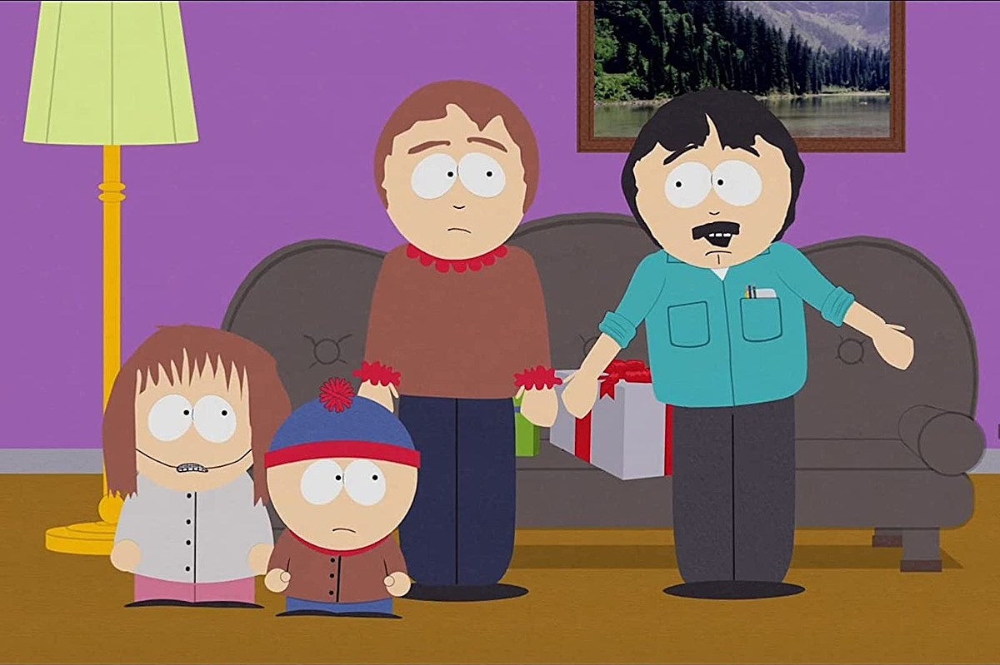

About Randy
Randy is hilarious! He's the father of Stan on Southpark. His wife is Sharon & daughter is Shelly.
Randy and his family
Randy's characteristics
- He's got tegridy
- Used to be a geologist
- He likes to cook
Randy's Family
Randy has an awesome family. They tolerate his antics. Click on the links below to read more about them: